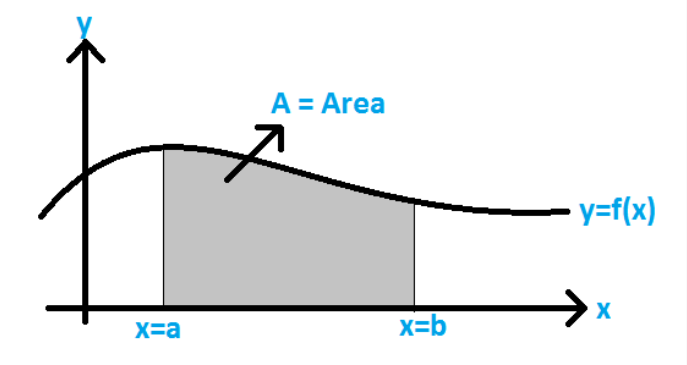

People often say that mathematics is tough. But let me tell you a secret: you don't need to memorize everything. That's what AI is for—memorizing stuff and doing it faster and better than we ever could. So, if you're here trying to beat AI by being a human calculator, stop right now. It's not worth it.
What sets us apart from AI is something far more extraordinary: our ability to understand and apply concepts. Remember, deep learning and neural networks are just cheap knock-offs of us humans. We are the original innovators. Neural networks? They're just glorified flowcharts wearing a fancy mathematical suit. Don't be intimidated—it's your brain playing a sneaky trick on you.
So here's my advice: grab a pen and paper and write things down as you read this blog. Take your time. This journey isn't about speed; it's about building that understanding. Stay curious, and don't let the fear of equations scare you off. Once you understand the logic, the math will feel like second nature.
This blog is here to make things easier for you. I'll break down the math, provide intuition, and make sure you're equipped with everything you need. Ready? Let's get started.
Probability: More Than Just Coin Flips
Probability, at its core, is the science of uncertainty — the mathematics of maybe.
In plain English, probability measures how likely something is to happen. Mathematically, it's a
number between 0 and 1:
0: That's a hard nope (e.g., the probability of your cat doing your taxes).
1: An absolute certainty (e.g., the probability of your alarm failing only on the day
of your biggest meeting)
If we're formal about it, probability is written as P(A), where 'A' is the event we're interested
in. For example:
Tossing a coin: P(Heads) = 0.5. That's 50% because there are two equally likely outcomes.
Now you must be thinking,
Why Care About Probability?
When we talk about probability, we're really talking about quantifying uncertainty. But what is
uncertainty? Uncertainty is simply the feeling we get when we don't know what will happen next.
It's the unknown in any situation—whether
it's how a coin will land, whether it'll rain tomorrow, or if your favorite team will win the game. In
life, we're constantly making decisions based on things we can't predict with certainty. That's where
probability comes in. It helps
us quantify uncertainty, turning what we don't know into something we can measure and reason about.
When we say something has a 70% chance of happening, we're putting a number on our uncertainty. It
doesn't guarantee the outcome, but it gives us a clearer idea of what to expect. Understanding
uncertainty through probability helps us
make better choices, whether we're deciding when to take an umbrella or calculating the risks of an
investment.
Think of it as your brain's way of saying I'm about X% sure this will happen. For example:
- The probability your code will compile (let's stay optimistic)
- How likely it is to win the lotto
- Your chances of not failing the exam after playing DnD the whole night.
It's everywhere.
But how do we actually define uncertainty? Enter the sample space.
Sample Space: The Universe of Possibilities
When you want to find out the probability of something happening, you first need to understand what could
happen. This is where the sample space comes in. It's essentially the set of all possible
outcomes of an experiment or event.
Think of it as your universe of possibilities.
For example:
- When flipping a coin, the sample space is:
S={Heads,Tails}
In this case, there are two possible outcomes, so the probability of each is ½.
- When rolling a six-sided die, the sample space is:
S={1,2,3,4,5,6}
S={1,2,3,4,5,6}
There are six possible outcomes, and each outcome has a probability of ⅙.
In other words, you know what's on the table, but you've got no clue what's coming your way.
Understanding Probability: Independent, Dependent, and
Mutually Exclusive Events
Have you ever wondered about the chances of getting heads twice when flipping a coin? Or what about
picking a heart card and then a spade from a deck? Let's break down these probability concepts in simple
terms.
Independent Events: They Don't Affect Each Other
Think of independent events as things that happen without influencing each other. The classic
example is flipping a coin twice:
- Getting heads on the first flip doesn't affect your chances of getting heads on the second flip
- Each flip always has a 50-50 chance, no matter what happened before
When events are independent, we multiply their individual probabilities. For example:
- Chance of heads on first flip = 1/2
- Chance of heads on second flip = 1/2
- Chance of getting heads twice (continuously) = (1/2)x(1/2) = 1/4 (or 25%)
Dependent Events: One Affects the Other
Dependent events are different — the first event changes the probability of the second. Think about
drawing cards from a deck(a deck has 52 cards, and 4 aces):
- First, you draw an ace (4/52 chance)
- Now there are only 51 cards left, and only 3 aces (because we removed one card, and that was the
ace)
- So your chance of drawing another ace is now 3/51
For dependent events, we multiply the first probability by the new, changed probability. Chance of two
aces (back to back) = (4/52) x (3/51) = 12/2652 ≈ 0.45%
Mutually exclusive events are like trying to be in two places at once — it's impossible! For example:
- A single coin flip can't be both heads and tails
- Drawing a card can't give you both a heart and a spade
When calculating the probability of either one happening, we add their individual probabilities:
- Chance of getting heads OR tails = 1/2 + 1/2 = 1 (100%)
- Chance of drawing a heart OR spade = 13/52 + 13/52 = 26/52 (50%)
Understanding Expectation: The Average That's Not Just Average
Think of expectation as the universe's best prediction. When we say E[X], we're asking What value should I reasonably expect to get in the long run?
Here's a real-world way to think about it: Imagine you're waiting for the bus. Some days it's 2 minutes late, sometimes 5 minutes early, occasionally 10 minutes late. The expectation isn't what happens most often — it's the center of gravity of all possible outcomes, weighted by how likely they are to happen.
Why does this matter? Why learn this concept? Imagine you're building an AI system that
needs to make decisions in an uncertain world. Should your self-driving car brake now or wait? Should
your recommendation system suggest
this movie or that one? These decisions aren't just yes/no – they need to account for all possible
outcomes and their likelihoods. It tells us where things tend to
go in the long run. In machine learning, this becomes crucial when we're trying to predict
outcomes or understand how our models might behave on average.
The Math Behind the Magic: Discrete Case
Let's make this super concrete. Imagine you're predicting how many bugs you'll find in your code:
0 bugs: 20% chance (0.2)1 bug: 50% chance (0.5)
2 bugs: 30% chance (0.3)
The expectation is: (0 x 0.2) + (1 x 0.5) + (2 x 0.3) = 1.1 bugs
Wait... 1.1 bugs? But you can't have 1.1 bugs! This shows something important: expectation tells you the long-term average, not what will actually happen in any single case.
This is how you get the average outcome from a discrete set of possibilities. It's helpful when
making predictions about repeated events (like how many times you'll get at least 1 bug).
The Continuous Case: Why Integrals?
Continuous events are like sliding on a ramp: they can take any value within a range. Think temperature,
time, or the accuracy of your model (could be 75.324...%).
Because there's infinite quantity, you can't find it's average. Why? Well to give you an intuition, suppose I ask you to list all the numbers between 1 to 10. You will say 2, 3, 4...9. That's cool. But I ask you to be more specific. You say, 1.1, 1.2, ..., 9.8, 9.9. But I need you to be more specific, i.e., 1.01, 1.02, ..., 9.99. More specific? I see a flying slipper on my way.
It's meaningless, you can't average them. But humans are smart. We've created integrals. No, don't leave.
It's not a difficult topic. I remember always running away from it, but in essence, it's very very
simple.
Imagine you're filling a bathtub. To know how much water is in it after 5 minutes, you could either:
1. Try to count every single droplet (impossible - like trying to count infinite points)
2. OR simply measure how fast water flows (say 10 liters/minute) and multiply by time (=60 liters)
The second approach is essentially what integration does! Instead of counting infinite points, we
look at the continuous flow and measure its cumulative effect.
Now for the math
part:
Let's say we want to find the average of a continuous function f(x) from 0(a) to 1(b):
1. With infinite points, both numerator and denominator become infinite! (∞/∞ is undefined)
2. So instead, we use integration:
Average = 1/(b-a) a∫bf(x) dx
Now, don't get scared about these weird symbols. I'll explain them.
What integration does:
Think of it as finding the area under a curve. If f(x) draws a line or curve, integration finds the
space beneath it.

In this figure, you can see that we make a line/curve using f(x), and then calculate the area under it.
That's it.
When we calculate the average, we are essentially spreading out the total sum over the range
to find the value that represents the entire interval.
∫: This symbol indicates that
you're performing integration. In this
context, it's used to sum or accumulate values over a continuous range.
1. Numerator (Second term):
The integral a∫bf(x) dx gives the
total sum of values under the curve. We use a and b to define the range (so that we only get the
area till a and b, i.e., our bounds). A more intuitive example would be how, to get the area of a
rectangle, you get the area by L*B.
Suppose if S = 4, and L = 5, the area is 20 units. Here, 4 and 5 are our bounds. We don't go beyond
them. So we have the area.
2. Denominator (First term):
Now the average. Something we're interested in. Why b-a? b > a, therefore, it'll
always give a positive value (10 - 5 will always be 5, a positive value. If we take 5 - 10 (a-b), we'll
get a negative value.) And as we know
average can't be negative, so it works well here. And b-a gives us the length of the interval
over which the values are spread, i.e., the distance between a and b.
Now, when we divide the area/length(width), we get height, or, in our case the average value, i.e., expectation.
So when you see 1/(b-a) a∫bf(x) dx, it's just saying:Find the area under
the curve, then divide by the width to get the average
CONGRATULATIONS!!!
You have just completed Day 1. Now do re-read the whole thing again. Until you can understand every concept. Take a pen and paper; and make notes. Revise. And remember, nothing is tough. You just need to have the hunger for knowledge.